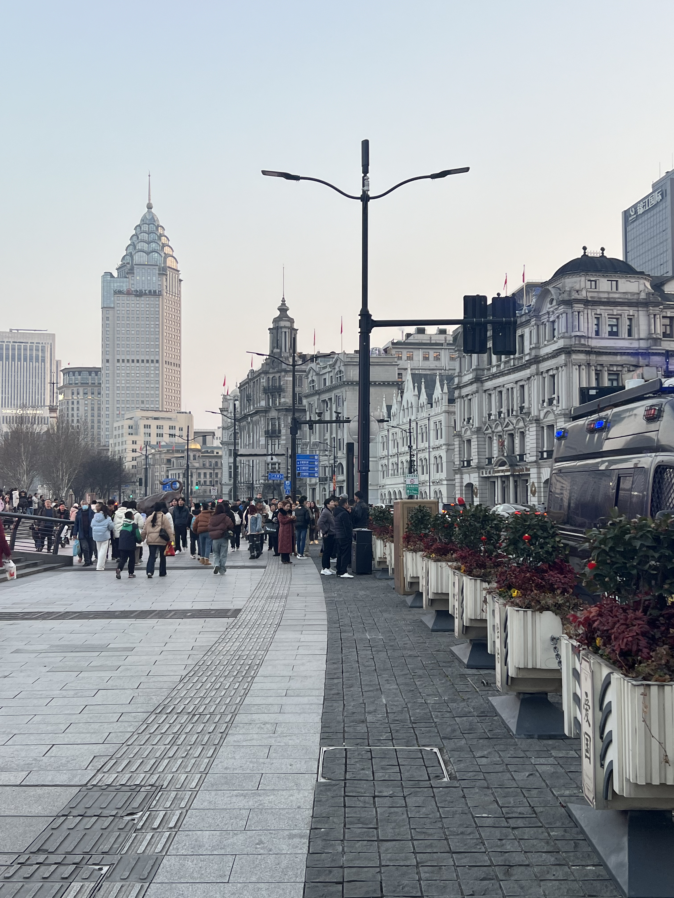
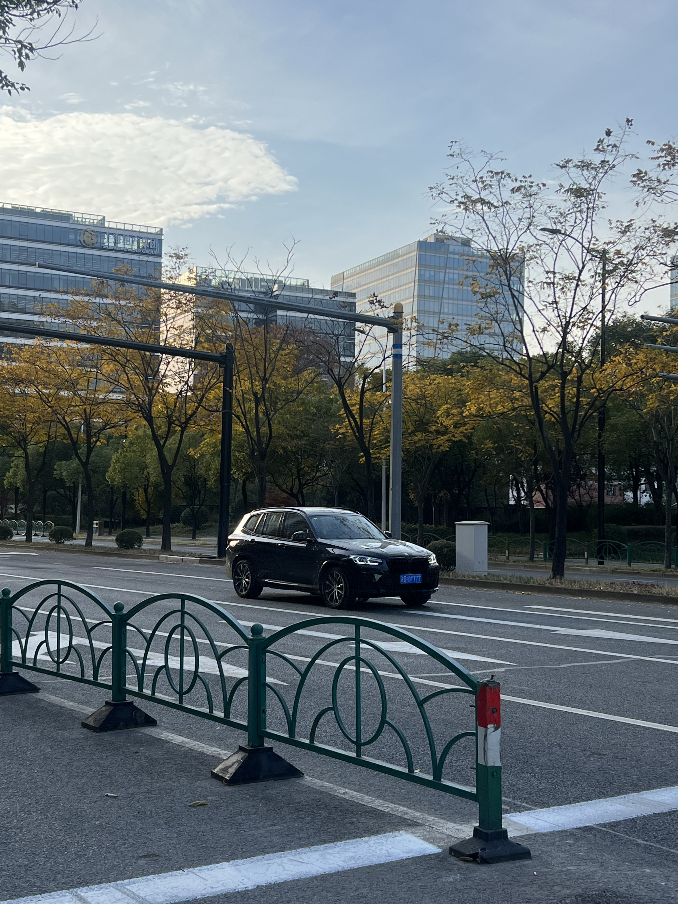
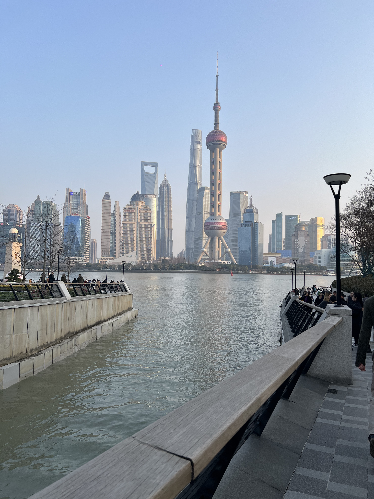
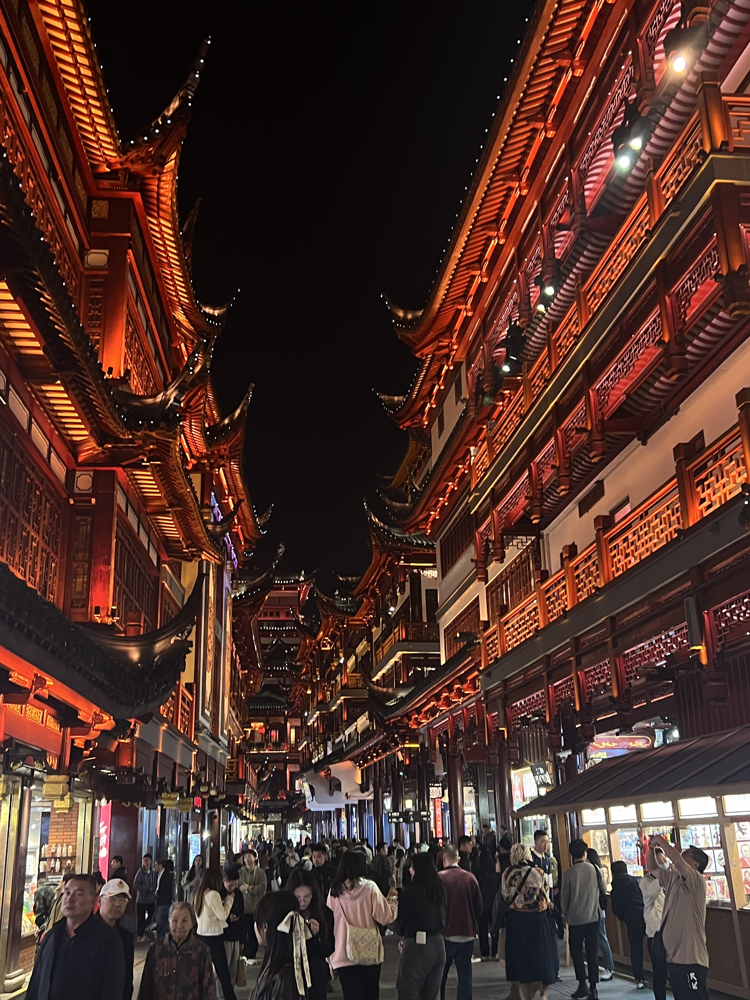

SHANGHAI IN 2023 VS. IN THE FUTURE
- How has Shanghai's skyline evolved with new skyscrapers and landmarks?
- How has Shanghai's cultural scene adapted and diversified?
- What environmental initiatives have been undertaken to combat pollution and promote sustainability in Shanghai?
- How has Shanghai's economy diversified, and what are the key industries driving growth?
- What social changes have occurred in Shanghai, including shifts in demographics and community development?
- How has Shanghai preserved its historical heritage while embracing modernity?




Explore Shanghai's future by quickly looking at this questions. Probably you are reading this after a few month this website is launched or maybe even year, nevertheless based on the pace at which this city changes it wouldnt be a surprise if my answers are different than your! When I first came to Shanghai I was scaed of not being able to adjust into the culture however I think this city has showned me resilience and I love it more and more everyday